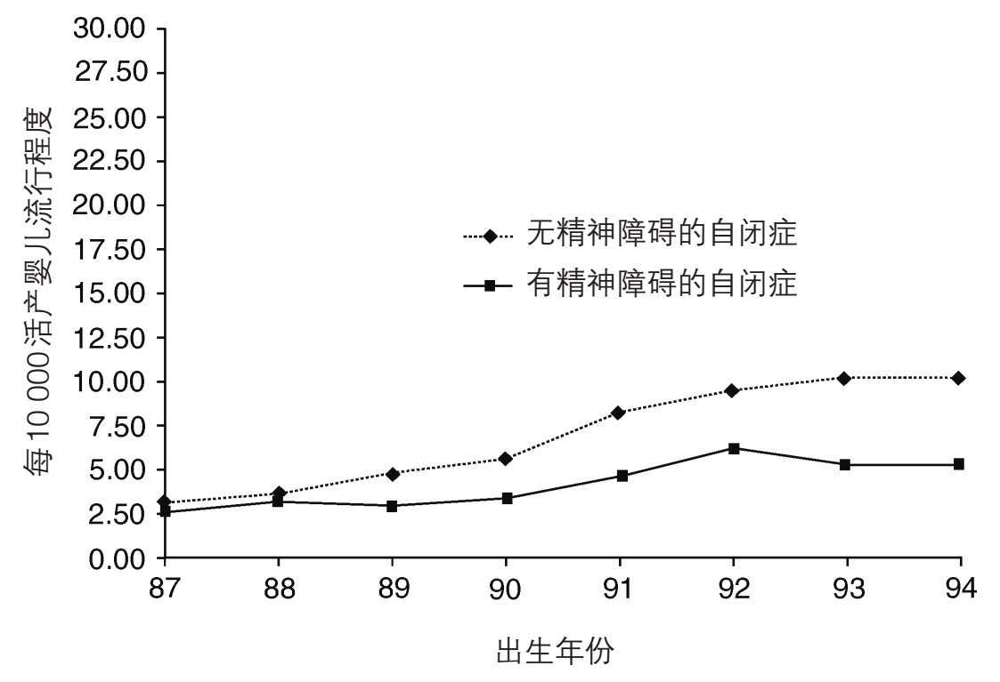

最初提出自闭症有多常见的问题时，人们只用非常狭窄的标准来辨识最经典的病例。这些标准包括社交的疏离、冗长的仪式，及对一成不变的坚持。后来发现这些标准太过严格。它们仅适用于自闭症谱系障碍孩子的一个小分支，而且只在他们发育的一个特殊阶段—多数在三到五周岁间—被观察到。孤僻的孩子长大后往往会变得有社交兴趣，相反的情况也有。同样，烦冗的仪式和对一成不变的坚持随时间流逝也可能增强或消退。

图5 在加利福尼亚州被确诊自闭症的人当中，无精神障碍的病例比有精神障碍的病例增长更快
当在自闭障碍的进程中行为改变变得明显，当意识到个体差异的程度时，狭义的特定的标准就被抛弃了。标准放宽至现在所知的自闭症谱系。谱系包括相当典型的病例，也包括相当非典型的病例。成人和年幼的儿童都能被识别出来，智力水平各异的人也能被识别出来。另外，还有轻微的病例和严重的病例。所有这些加在一起，病例就越来越多。
现在有多少自闭症？
至今最可靠的信息来自英国的一项对57000名年龄9到10岁儿童进行的研究。在这个群体中自闭症谱系障碍的病例仅占1%多一点。如果你只看自闭症病例，大约只有0.4%，而只有0.2%的孩子符合经典自闭症的狭义标准。其他形式的自闭障碍，包括阿斯伯格综合征，占0.7%左右。
如果这个估算的1%可靠，那么在美国，一个拥有2.8亿人口的国家，会有令人震惊的200万到300万人患有某种形式的自闭症。而在英国，人口只有6000万左右，自闭症患者也有50万以上。假定大约总人口的1%患有自闭症谱系障碍，你认识的人当中肯定会有人患自闭症。这使得自闭症是一种与精神分裂症和双相型障碍一样常见的精神障碍。但与精神分裂症和双向型障碍不一样，自闭症发生在童年早期并持续终身。
万一“真的”增长了呢—是什么原因？
以上数据令人不寒而栗。半个世纪前还没有什么人对自闭症有意识。仅有最经典形式的自闭症能被诊断出来，所有人都相信这是种很罕见的障碍。而现在，经典自闭症的病例已有那时估测的五倍之多。这是引起惊恐的原因吗？并不一定。事实正好相反，如果我们认为这种增长是由于人们意识提高了的话。即使经典病例曾经也会被漏诊。不管怎样，大多数专家那时对儿童自闭症也一无所知，那时为精神障碍者设立的机构里，也接收了相当数量的病例，现在我们知道那就是自闭症。1960年代，我在特殊医院里就亲眼见过这样的孩子。如今诊断中心遍布各地，也有更多为确诊为自闭症的孩子开办的服务机构。所有这些因素都对病例巨幅增长产生了影响。
以上就是全部原因了？我们怎么能确定呢？对自闭症状况的意识是逐步增加的。因此，我们以为病例的增长也是渐进的。我们还会以为到目前为止应该稳定下来了。
实际上增长的确是渐进的，最近也的确稳定下来。然而，如果因此感到自满、得意那就错了。家长们想要知道导致近年来自闭症谱系障碍病例飞速增长的所有原因。毕竟可能还有新的原因，比如到目前为止还未知的毒素或病毒可能从出生之前就影响大脑发育。若果真如此，找出原因就至关重要。
自闭症极不可能是由出生之后的不利环境因素导致的。我们从下一章中可以看到，远在出生之前就可以探测到自闭症大脑中神经细胞的异常。然而，这与很多家长的个人经验并不相符。别忘了这一点：很多家长描述称他们的孩子在婴儿期看起来完全正常，在孩子令人费解地发生变化之前他们没有任何理由为此担心。这种情况有时发生在孩子一到两周岁之间：他们不再说已经学会的语言，且完全丧失对其他人的兴趣。